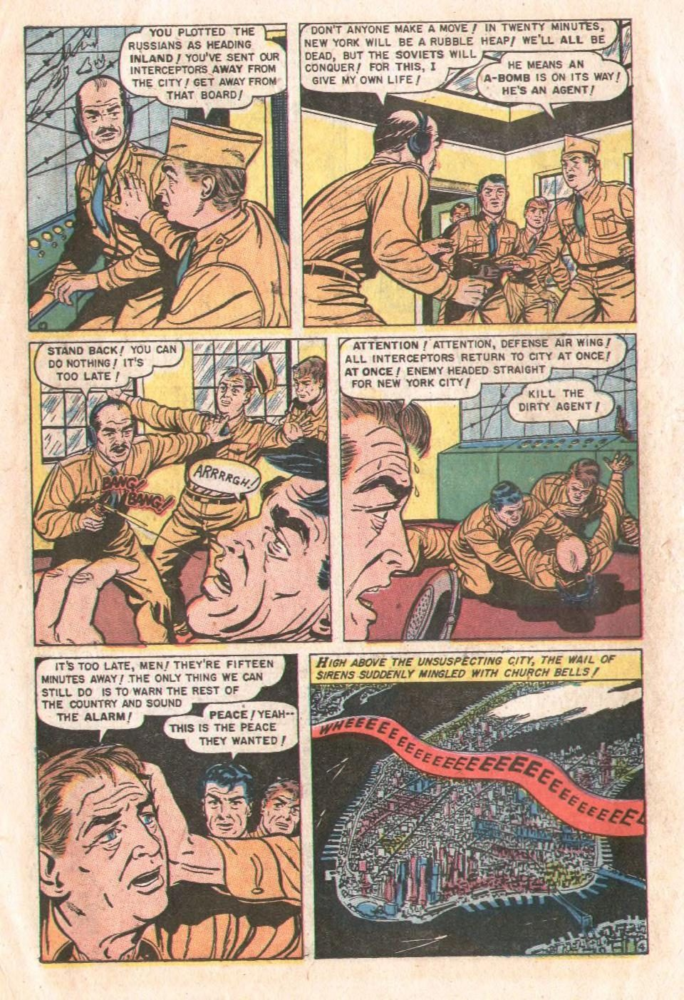

References / Editorial / 118
Atomic War! #1, page 6
A 1952 war-comic page of the kind Pop art enlarged: six panels with speech balloons, a yellow caption box, and the sound effects BANG! BANG!, ARRRRGH!, and a siren’s WHEEEE.
- Source
- Wikimedia Commons: AtomicWar0106.jpg
- Creator
- Ken Rice (artist, per Commons); Ace Comics (publisher)
- Made
- November 1952
- Style
- Pop art (agent-proposed, not yet reviewed by a person)
- Moods
- Dramatic, pulp, graphic
- Evidence
- Inspected the Internet Archive scan of the printed comic, atomic-war-01, page image n5 (960 × 1402 px), which is the page Commons files as AtomicWar0106.jpg. The Commons original could not be downloaded (HTTP 429); its metadata was read.
- Reviewed
- Rights
- Open license, stored. License: public domain. Rights policy

Context
Atomic War! was an Ace Comics series of four issues, November 1952 to February 1953, about a fictional atomic war between the Soviet Union and the United States set in 1960. Commons credits this page to Ken Rice. Commons.
Lichtenstein’s war paintings, such as Whaam!, came from DC war comics of 1962, not from this series. Wikipedia.
Observed
- Six rectangular panels in three rows, each with a thin black border and white gutters between them.
- Speech balloons are white ovals with black outlines and pointed tails. They hold hand-lettered capitals, with some words in heavier letters (“INLAND”, “ALL”, “AT ONCE!”).
- The last panel has a yellow caption box across the top: “HIGH ABOVE THE UNSUSPECTING CITY, THE WAIL OF SIRENS SUDDENLY MINGLED WITH CHURCH BELLS!”
- “BANG! BANG!” is lettered in red with a black outline next to a firing pistol; “ARRRRGH!” sits in a white balloon.
- A red ribbon with the letters “WHEEEE…EEE” growing larger winds across an aerial view of Manhattan.
- Color is flat and printed: mustard uniforms, pink skin, pale blue and green walls. Black ink lines and solid black shadows model the faces.
- The paper is yellowed, and the colors are slightly off-register at some edges. No dot pattern is visible at this scan size.
Why it belongs
Compared with the Pop paintings, the source page is small, crowded, and busy. Lichtenstein’s change was to isolate one panel, enlarge it, simplify the color to primaries, and make the printing dot visible as a motif.
The heavy words inside balloons and the sound effect that grows along a ribbon are lettering devices that transfer directly to screen headings.
Borrow
Mark stressed words in a balloon with heavier letters, as comic letterers do, instead of with color.
Let a sound-effect word grow in size along a path to show sound moving across a panel.
Measured
Machine-extracted by tools/image-traits.py on . Full measurement.
- Mean chroma
- 0.18
- Palette
- #fae8d5 21%
- #51463a 14%
- #f0bfac 5%
- #f7dc93 4%
- #bd9475 3%
- #9f785c 3%
- #896752 3%
- #efc18b 3%

